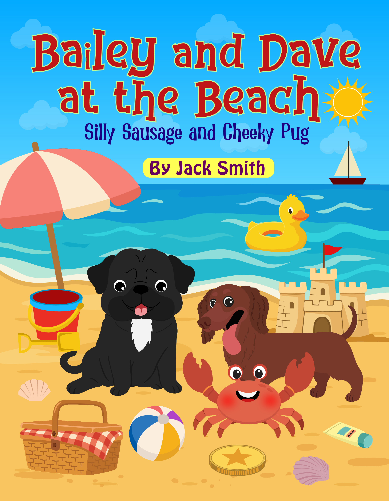

Bailey and Dave: Silly Sausage and Cheeky Pug
Meet the two best friends in their first interactive adventure and discover their very different personalities.
Explore the bookBuy on AmazonBailey & Dave don’t just ask children to listen. Every adventure invites young readers to search, count, answer questions, tickle ears and help two lovable dogs along the way.
Meet the booksTry the free activitiesBailey is a timid miniature dachshund who often thinks something unfamiliar must be a scary alien. Dave is his cheerful pug friend, usually ready to investigate. As the story unfolds, children help them look for clues, count what they find and encourage Bailey with lucky ear tickles.
Choose an adventure and discover how Bailey’s latest “scary alien” becomes a new friend.
Meet the two best friends in their first interactive adventure and discover their very different personalities.
Explore the bookBuy on Amazon
Explore the park, solve little challenges and help Bailey and Dave meet someone unexpected.
Explore the bookBuy on Amazon
Join a festive interactive adventure filled with friendship, imagination and Christmas surprises.
Explore the bookBuy on Amazon
Search the seaside, solve fun challenges and help the dogs make a surprising new friend.
Explore the bookBuy on AmazonThese stories are designed to create a conversation between the child, the grown-up and the book. Children can point to details, predict what happens next and repeat familiar actions as their confidence grows. The same adventure can feel different each time because the reader is part of it.
The humour and recurring routines make Bailey & Dave suitable for reading aloud at home, sharing with a group or enjoying alongside the free games and puzzles on this website.
The narrator speaks directly to the child and asks them to search, count, answer, point and help the characters through physical actions such as lucky ear tickles.
No. The interaction happens between the reader and the printed or Kindle story. The website activities are optional extras.
Yes. Bailey and Dave return in different adventures, with familiar jokes and routines alongside new places, challenges and friends.
Visit the free activities page for games and puzzles inspired by their adventures.